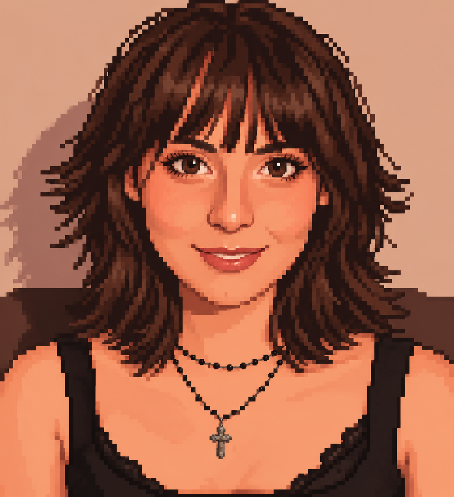
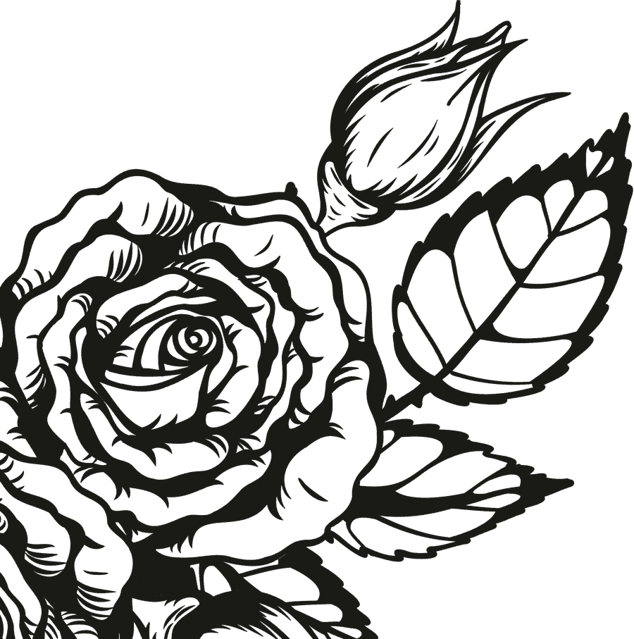

reel_01.mp4
Hacktown: Funil de Conversão

C:\ sasa \ portfolio.exe
Marketing & Desenvolvimento Criativo · Social Media & Design · Formada em Produção Musical

Oi, eu sou a sasa!
Samara Maria Resende Bottas

01 — programas instalados
Meu nome é Samara e sou formada pela Belas Artes. Meu trabalho é transformar ideias e a identidade das marcas em narrativas visuais, criando conteúdos que conectam marcas e pessoas. Tenho experiência em criação de conteúdo para redes sociais, produção e edição de vídeos, motion graphics e tratamento de imagens. Também atuo no processo criativo, desde a pesquisa de tendências, brainstorming e desenvolvimento de roteiros até a produção audiovisual, incluindo a criação de trilhas sonoras e conteúdos musicais. Tenho familiaridade com diferentes ferramentas de criação e edição, e novas tecnologias para desenvolver conteúdos relevantes, criativos e alinhados às tendências da comunicação digital.
Produtora de Conteúdo
20DASH
Roteiro, produção e edição de reels e carrosséis para as redes da 20DASH: parcerias, eventos e conteúdos sobre tecnologia e criatividade.
Graduação em Produção Fonográfica
Belas Artes
Concluída no final de 2025.
02 — C:\ social_media \ 20DASH
Meus últimos reels como social media da 20DASH: parcerias, eventos, produtos e conteúdo de marca.
03 — C:\ social_media \ carrosseis
Posts em carrossel sobre tecnologia, cultura e marcas. Use as setas para passar os slides.
04 — contato.exe